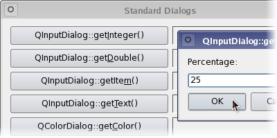

Qt 5.3
Qt Widgets
Standard Dialogs Example
Qt 5.3.1 Reference Documentation
Standard Dialogs Example
The Standard Dialogs example shows the standard dialogs that are provided by Qt.

Files:
dialogs/standarddialogs/dialog.cpp
dialogs/standarddialogs/dialog.h
dialogs/standarddialogs/main.cpp
dialogs/standarddialogs/standarddialogs.pro